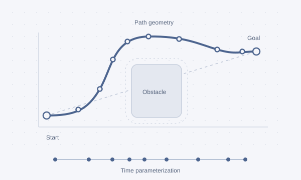

Diffusion-guided robot trajectory optimization
Jointly optimizing a robot’s path and timing with diffusion priors, aiming for collision-free, dynamically feasible, time-efficient motion.
In progress · Evaluating motion feasibility and execution time in simulation.